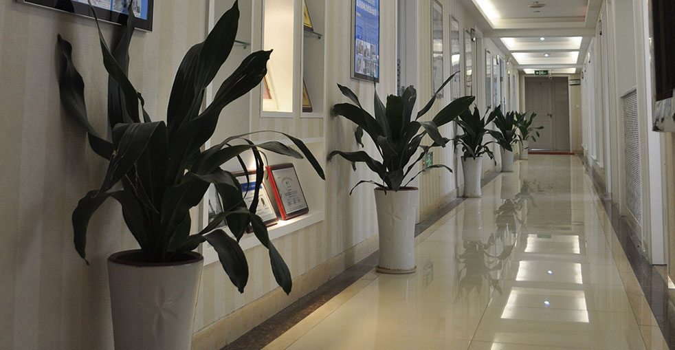
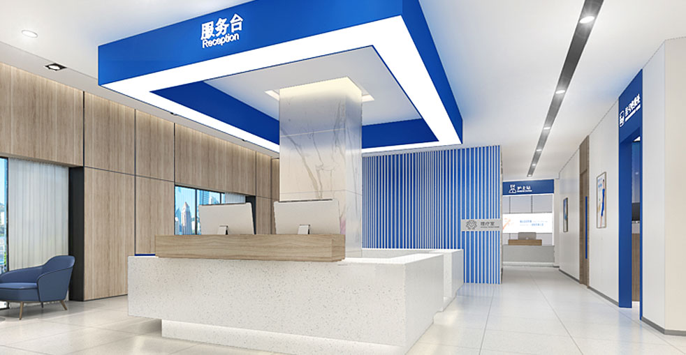

運用先進微針技術進行個人化髮際線設計，實現自然、持久的效果

我們的髮際線植髮手術是頭髮修復的黃金標準。擁有超過18年的經驗和10萬+成功手術，我們專門創建與您的面部特徵相得益彰的自然外觀髮際線，恢復您的年輕外觀。
基於面部比例和黃金比例的個人化髮際線設計
6步驟流程，為最佳效果和舒適度設計
根據您的面部特徵、年齡和目標進行專業評估和客製化髮際線設計
輕柔FUE提取您頭皮後/側的健康捐贈毛囊
專門處理和分類毛囊，以實現最佳放置
遵循自然頭髮生長方向和密度的精確切口
使用專利植入筆進行微針放置，實現完美效果
全面的護理說明和12個月的隨訪計劃
業界領導者，擁有經過驗證的效果
自2006年以來，微針植髮技術的先驅和領導者
遍布中國主要城市，都具有相同的高標準
創新的微針和植入筆技術，實現卓越效果
受到全球患者的信賴，帶來改變人生的效果
在整個治療過程中為國際患者提供全面英語支持
最先進的設施和嚴格的安全協議，讓您安心
看看我們的患者實現的驚人轉變


與我們滿意患者的珍貴時刻

成功手術後與我們的醫療團隊合影

與我們的醫生慶祝極好的效果

另一位滿意患者分享他們的喜悅

患者與我們的專家出院前

與陳醫生術後開心的患者

興奮的患者展示他們的新樣貌
聽聽我們世界各地滿意患者的分享
"在Google搜尋「植髮推薦」找到大麥，他們的微針植髮技術太厲害了！效果非常自然，我的自信心終於回來了。大麥真是台灣植髮的好選擇！"
"香港植髮診所我比較了好多家，最後選了大麥。從諮詢到手術全程都很專業，醫師團隊很有經驗，真的很推薦給需要的朋友！"
"I came from the US to Shanghai for the surgery, and every step of the journey was worth it. The microneedle technology is incredible, and recovery was much faster than I expected!"
"在Bing上看到大麥植髮的評價很不錯，過來做了FUE植髮。價格合理，效果又好，毛囊存活率很高，真的是澳門植髮的優質選擇！"
"中國台灣植髮價格很貴，專程來到大麥做無剃髮植髮。360度種植筆做出來的髮際線超自然，朋友們都看不出我有植髮，太值得了！"
"18年經驗加上10萬多個成功案例，大麥植髮真的很有說服力。我的頭髮加密效果很自然，就連理髮師都看不出痕跡，太感謝了！"
體驗我們現代舒適的設施

我們的最先進設施

在我們的尊貴休息室放鬆

無菌且先進

私密且專業

舒適的術後空間

溫馨的入口
找到關於植髮常見問題的答案
聯絡我們進行免費諮詢
15810155700
+86 13730143529
hairtransplant@qq.com